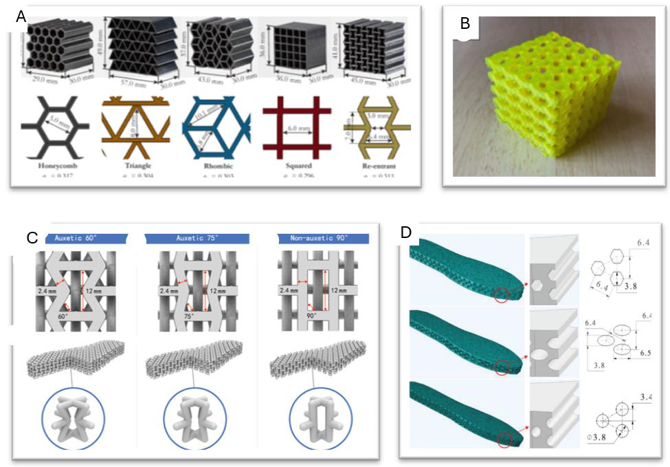
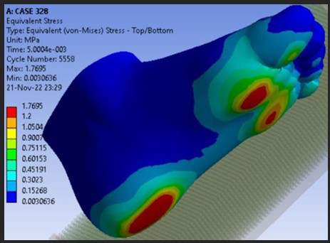
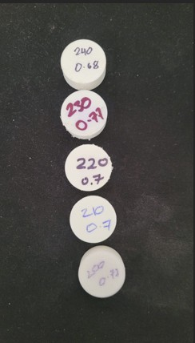
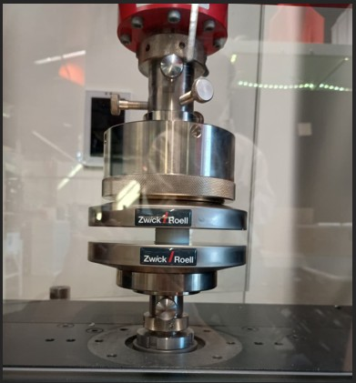
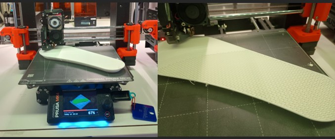

Course
ENG5005/5006 — Research Methods (Final Year Project)
Institution
Monash University, Clayton
Outcome
Physical Prototypes Printed & Mechanically Tested
Project Overview
Conventional off-the-shelf insoles cannot deliver the right balance of support, cushioning, and pressure relief for people with flat feet, plantar fasciitis, or diabetic foot conditions. This project explored whether FDM 3D printing with a foaming thermoplastic polyurethane could produce a customised insole that outperforms standard orthotic solutions — using real foot geometry, graded lattice structures, and systematic material characterisation to make that case.
The project ran across two semesters: Semester 1 (ENG5005) focused on literature review, material selection, CAD design, and FEA simulation setup. Semester 2 (ENG5006) delivered print calibration, physical prototypes, and mechanical testing — culminating in insoles that were fabricated, worn, and tested.
My Role
This was a five-person final year project, and in practice I carried the project's direction and momentum from start to finish. Two teammates — Kenny and Himmat — were consistent, technically engaged contributors who could be relied on to deliver; together the three of us formed the working core of the team. Keeping everyone aligned, chasing contributions, reviewing and lifting the quality of every section before submission, and making sure the project stayed on track through equipment unavailability and institutional delays — that coordination was as much a part of my workload as the technical work itself.
On the technical side, my responsibilities spanned the full project lifecycle:
- Material selection lead: Evaluated five TPU and EVA material candidates across Shore A hardness, density, elongation at break, and FDM compatibility. Recommended VarioShore TPU as the optimal choice — its foaming mechanism enables tunable softness zones through extrusion temperature alone, something no conventional TPU can match.
- Lattice design and infill optimisation: Reviewed and documented the mechanical trade-offs between honeycomb, gyroid, auxetic, Voronoi, and lattice structures, establishing the design rationale for zone-specific density gradients across the heel, arch, and forefoot.
- SolidWorks FEA: Set up the foot model, applied 300N boundary conditions (half of 60 kg body weight), defined custom skin material properties, and worked through mesh refinement and convergence issues. Documented all simulation constraints and iterative fixes.
- Print calibration and prototyping (with Kenny): Fabricated VarioShore TPU test cubes at five extrusion temperatures (200–240°C) to characterise how temperature affects density and Shore A hardness. Used those results to set final print parameters for full insole fabrication.
- Mechanical testing: Conducted Shore A hardness testing on all temperature variants using a ZwickRoell machine, generating the comparative dataset that validated the material selection and print parameter choices.
Why VarioShore TPU
Most 3D-printed insole research uses standard TPU filaments — flexible, durable, but fixed in hardness. The key insight driving this project's material choice was that VarioShore TPU's foaming agent activates with heat: at higher extrusion temperatures, the material expands, becoming lighter and softer. This means stiffness zones are not designed through geometry alone — they are baked directly into the print temperature profile.
Adjusted by extrusion temperature. No post-processing, no separate parts — softness is a print setting.
Foamed structure at ~0.4–0.68 g/cm³ compared to ~1.2 g/cm³ for standard filaments.
Prusa MK4 direct-drive extruder capable of printing fine lattice walls without delamination.
Laminated EVA sheet evaluated alongside pure-TPU configurations for peak pressure comparison.
Lattice Design
Five infill architectures were evaluated for the insole body: cellular (honeycomb, triangle, rhombic, squared, re-entrant), gyroid, auxetic, Voronoi, and standard lattice. The final design uses a graded lattice with denser unit cells under the heel for impact resistance, and a more open, flexible geometry under the arch and forefoot for cushioning and pressure redistribution.

Lattice architecture evaluation — from left: cellular structures, auxetic variants, and zone-specific lattice cross-sections with unit cell dimensionsSimulation — SolidWorks FEA
A publicly available 3D foot model was used to set up the simulation environment in SolidWorks. A 300N load (representing half body weight for a 60 kg person) was applied across the plantar surface with a fixed boundary condition at the ankle. Custom material properties for human skin were defined manually, as no standard library entry existed. The Von Mises stress map reveals pressure concentration at the metatarsal heads and heel — the exact zones the graded lattice design addresses.

The simulation confirmed that peak plantar stress occurs at the metatarsal heads and heel — consistent with clinical literature reporting 200–600 kPa in those regions. This validated the zone-specific lattice density approach: stiffer geometry under the heel, more compliant under the forefoot.
Achieving convergence required iterative mesh refinement and boundary condition simplification. The final simulation used 5,558 mesh cycles with Von Mises stress ranging from 0.003 to 1.77 MPa across the plantar surface.
Print Calibration — Temperature vs Density
Before printing full insoles, a calibration run of five 25×25×25 mm VarioShore TPU test cubes was fabricated at extrusion temperatures from 200°C to 240°C. Each cube was weighed and tested for Shore A hardness on the ZwickRoell machine to map the relationship between temperature, foam density, and softness.


At 240°C, the foaming agent fully activated — producing the lowest density sample (0.68 g/cm³) and softest Shore A reading. Lower temperatures produced denser, stiffer samples at around 0.7 g/cm³. These results directly informed the zone-specific print temperature profile used in the final insole prototypes.
Fabrication & Physical Outcome
Full-size insole prototypes were fabricated on a Prusa MK4 FDM printer using the calibrated print parameters. The lattice geometry was sliced and validated before printing, with direct-drive extrusion ensuring consistent TPU deposition throughout. Two configurations were produced: a standalone VarioShore TPU insole and a hybrid version with a laminated EVA top layer.


Key Outcomes
Physical Prototypes Delivered
Full-size VarioShore TPU insoles fabricated on a Prusa MK4 and physically validated against real foot geometry. Both standalone TPU and hybrid TPU+EVA configurations produced.
Material Data Generated
Shore A hardness and density dataset across five temperature points (200–240°C). 240°C identified as optimal for softness and weight, reaching 0.68 g/cm³ — confirming the foaming mechanism.
FEA-Validated Design Rationale
SolidWorks simulation confirmed pressure concentration at metatarsal heads and heel, directly justifying the graded lattice density approach used in the final geometry.
Managed Under Constraint
Delivered physical results despite scanner unavailability, 3D printer downtime, and lab access delays in Semester 1. Contingency planning and team coordination kept the project on track for Semester 2 prototyping.